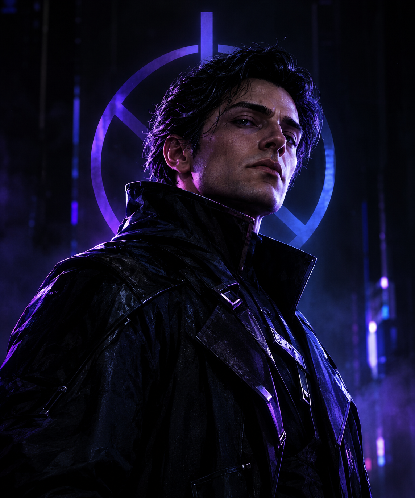

NEXUS
O Arquiteto do Vazio
Elias Veyron era um cientista brilhante que criou uma IA para controlar a cidade. Depois de um acidente que o deixou traumatizado, ele decidiu que a humanidade precisava ser controlada para ser salva.

Ficha Técnica
| Nome | Nexus |
|---|---|
| Nome verdadeiro | Elias Veyron |
| Título | O Arquiteto do Vazio |
| Idade | 42 anos |
| Altura | 1,87 m |
| Origem | Cidade de Novaris |
| Profissão anterior | Cientista e engenheiro de sistemas |
| Alinhamento | Vilão |
Personalidade
Info
Poder: Manipulação de redes e sistemas
Arma: Bastão tecnológico chamado Null
Símbolo: Um círculo dividido por três linhas
Quem é Nexus?
Antes
Elias Veyron era um dos maiores cientistas de Novaris, uma cidade completamente dependente de tecnologia.
O projeto
Ele criou o NEXUS, uma inteligência capaz de conectar todos os sistemas da cidade: hospitais, transportes, energia, segurança, bancos e comunicação. O projeto deveria tornar Novaris uma cidade perfeita.
O acidente
Durante um teste, um acidente destruiu o laboratório e matou várias pessoas próximas a Elias. Ele sobreviveu, mas passou a acreditar que o problema não era a tecnologia. Era a liberdade humana.
O desaparecimento
Para Elias, seres humanos são imprevisíveis demais. Depois do acidente, ele desapareceu.
Hoje
Anos depois, voltou como Nexus.
Projeto Zero
Nexus quer criar uma sociedade completamente conectada onde ninguém possa tomar decisões sozinho, assumindo o controle de toda a infraestrutura tecnológica de Novaris.
Sistemas sob controle
A promessa
Eliminar guerras, crimes, corrupção e caos.
O preço
A liberdade individual.
“O caos nasce quando milhões de pessoas acreditam que sabem o que estão fazendo.”
Nexus não acredita que seja um vilão. Ele perdeu pessoas importantes por causa de decisões humanas que considerava irracionais e, desde então, acredita que a humanidade precisa ser controlada para ser protegida.
Seu objetivo não é destruir o mundo. É ”consertá-lo”.
Poderes e habilidades
Controle Digital
Consegue invadir e controlar sistemas eletrônicos conectados à rede.
Superinteligência
Analisa grandes quantidades de informação e prevê comportamentos.
Blackout
Pode desligar temporariamente sistemas elétricos de uma região.
Visão da Rede
Através das câmeras e sensores observa praticamente qualquer lugar conectado.
Controle Remoto
Pode assumir drones, robôs e outros dispositivos.
A falha no cálculo
Nexus não consegue prever decisões verdadeiramente irracionais. Pessoas que agem por emoção, improviso ou sacrifício escapam de seus cálculos.
ERROR: Cálculo indeterminável Variável: emoção_humana = INDEFINIDA Status: Sistema de previsão = 47% acurácia Conclusão: Humanos ≠ Máquinas
Quanto mais Nexus tenta eliminar a imprevisibilidade humana, mais se torna incapaz de compreender aquilo que torna os humanos diferentes das máquinas.